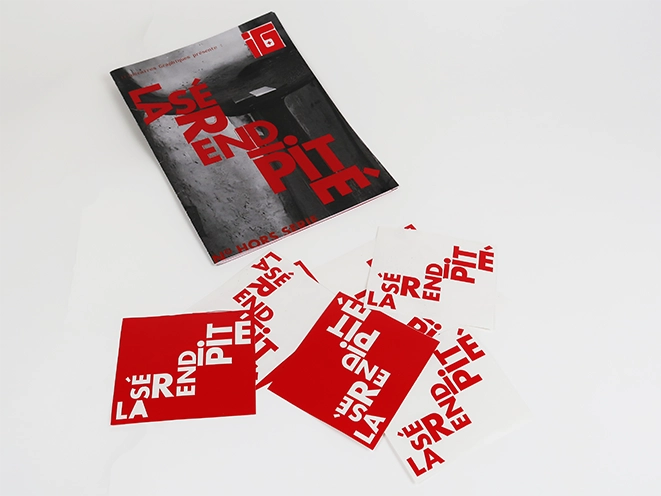
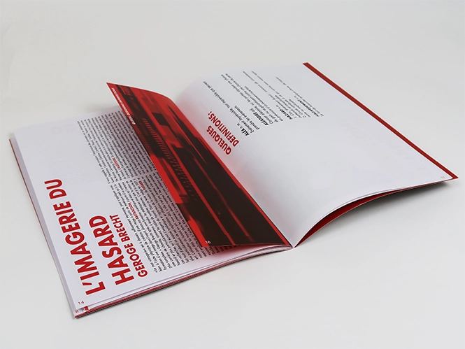
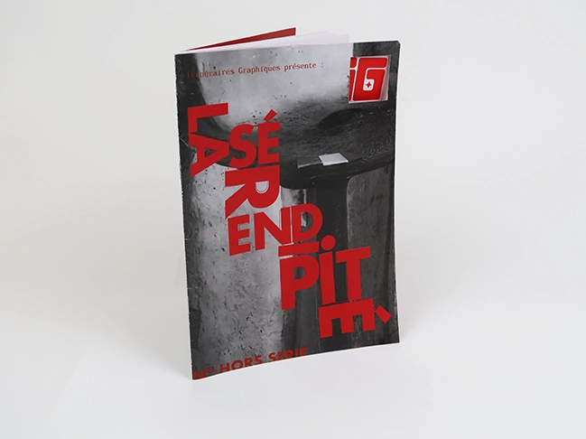
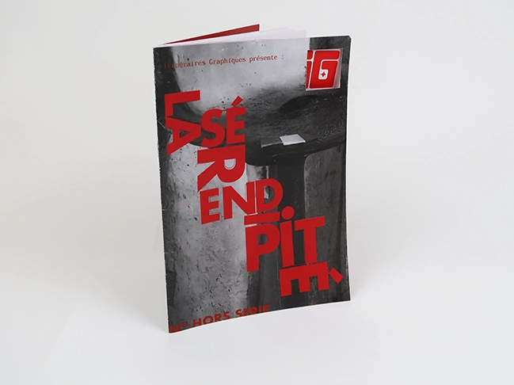
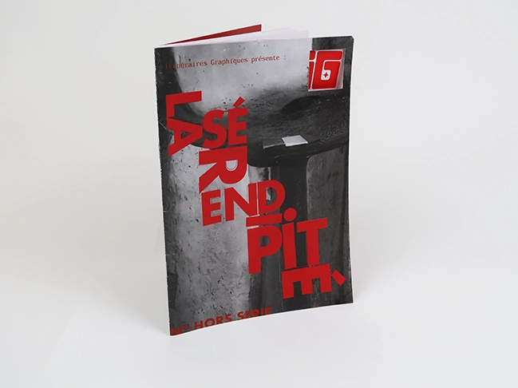

Itinéraires Graphiques
Itinéraires graphiques est une revue fictive qui est apparue au sein d'un groupe. Chaque personne partisante du projet a réalisé un numéro de cette revue avec un sujet abordé différent à chaque ouvrage. Le numéro ici présent évoque le principe de la sérendipité dans plusieurs domaines notamment dans le design. Actuellement, les procédés de créations sont divers et variés mais certains créateurs et créatrices utilisent le hasard comme procédés de création pour essayer de perdre le contrôle. La sérendipité représente le concept de créer quelque chose sans le vouloir ce qui donne une notion de hasard.



 

